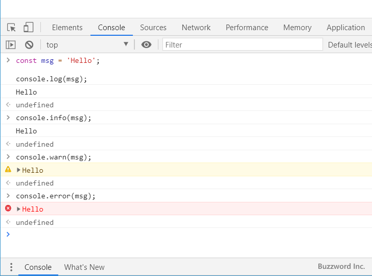
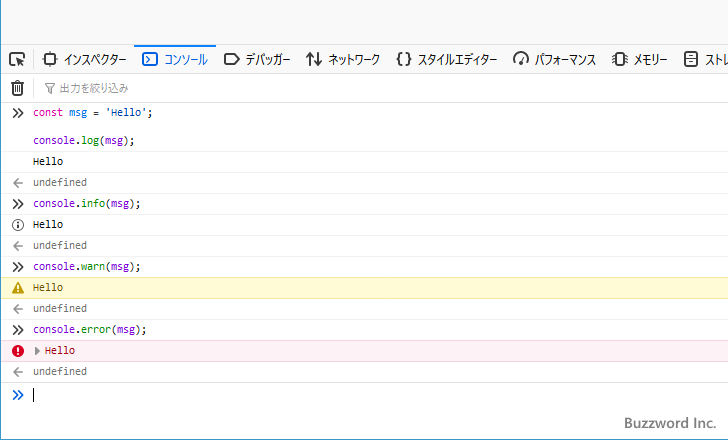
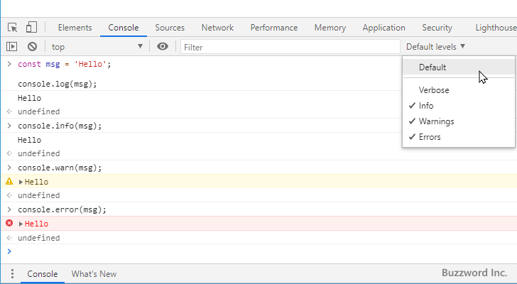
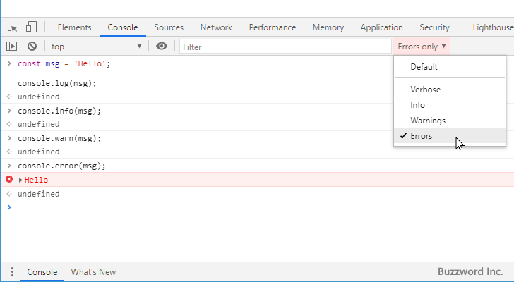
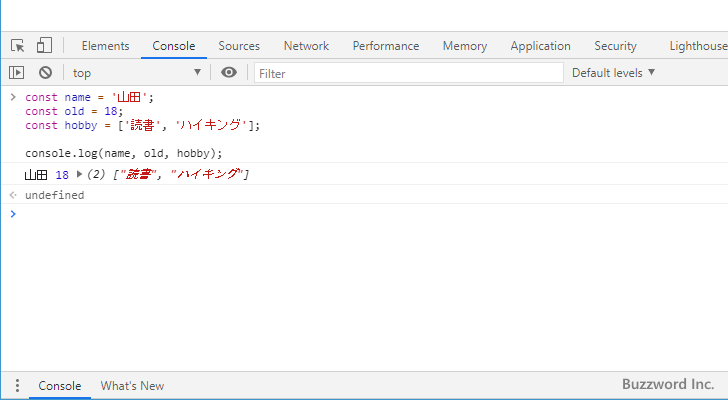
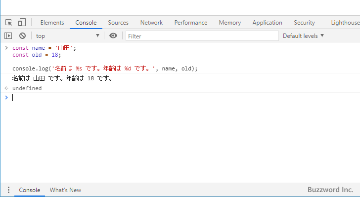
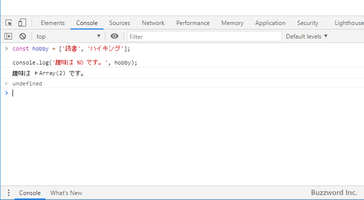
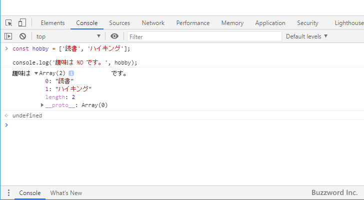
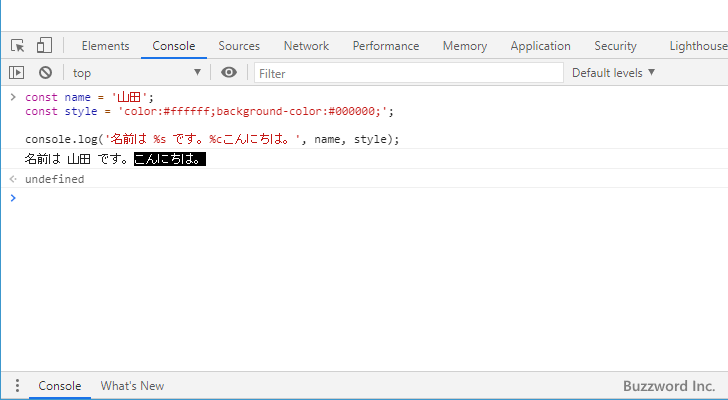

コンソールにログを出力する
Console オブジェクトではコンソールに対して変数に格納されている値や任意の文字列を出力するためのメソッドとして console.log 、 console.info 、 console.warn 、 console.error の 4 つのメソッドが用意されています。それぞれのメソッドの基本的な機能は同じですがコンソールに表示される見た目が異なります。ここでは Console オブジェクトで用意されているコンソールに文字列を出力する 4 つのメソッドの使い方について解説します。
コンソールにログを出力する
Console オブジェクトで用意されているコンソールにログとして文字列を出力するメソッドには次の 4 つがあります。それぞれの書式は次の通りです。
console.log(オブジェクト [, オブジェクト, ...]) console.info(オブジェクト [, オブジェクト, ...]) console.warn(オブジェクト [, オブジェクト, ...]) console.error(オブジェクト [, オブジェクト, ...])
それぞれのメソッドの引数にはコンソールに出力するオブジェクトを指定してください。オブジェクトの値がコンソールに出力されます。複数のオブジェクトを同時に出力する場合はカンマ(,)で区切り続けて記述します。
それぞれのメソッドを使うとどのようにコンソールに出力されるのかは次のサンプルをみてください。
const msg = 'Hello'; console.log(msg); >> Hello console.info(msg); >> Hello console.warn(msg); >> Hello console.error(msg); >> Hello

コンソールに出力される文字列の内容は同じですが、 console.warn メソッドでは警告を表すアイコンが左側に表示され、 console.error ではエラーを表すアイコンが左側に表示されます。 Google Chrome の場合は console.log と console.info では違いがありませんでした。
なお FireFox で同じようにコンソールに出力した場合、 console.info メソッドでは情報を表すアイコンが左側に表示されました。

コンソールに出力するメッセージの内容に合わせて使用するメソッドを選択することで、コンソールに表示された内容を見たときに分かりやすくすることができます。またコンソールのフィルタ機能を使用することで、警告のログだけを表示したりエラーのログだけを表示させることができます。
下記は Google Chrome でフィルタをかけていない場合のコンソールの画面と、エラーだけを表示するようにフィルタを行った場合のコンソールの画面です。


エラーだけを表示するようにフィルタした場合は、 console.error メソッドで出力されたログは表示されますが、他のメソッドで出力されたログは表示されなくなります。
複数のオブジェクトを同時に出力する
console.log メソッドおよび他の 3 つのメソッドでは、引数にカンマ(,)で区切り複数のオブジェクトを指定することでまとめてコンソールに出力することができます。
次のサンプルをみてください。
const name = '山田';
const old = 18;
const hobby = ['読書', 'ハイキング'];
console.log(name, old, hobby);
>> 山田 18 ["読書", "ハイキング"]

引数に指定したオブジェクトが順番にコンソールに出力されています。この時、オブジェクトとオブジェクトの間には空白文字が表示されます。
文字列の置換を利用したログの出力
console.log メソッド(および他の 3 種類のメソッド)では次の書式も利用することができます。
console.log(プレースメントを含む文字列 [, 置換するオブジェクト, ...])
1 番目の引数に指定した文字列の中にはプレースメントを必要な数だけ記述します。そして 2 番目以降の引数で指定されたオブジェクトをプレースメントの先頭から順に置き換えていきます。そして置換が終わった文字列をコンソールに出力します。
次のサンプルをみてください。
const name = '山田';
const old = 18;
console.log('名前は %s です。年齢は %d です。', name, old);
>> 名前は 山田 です。年齢は 18 です。

1 番目の引数に記述した文字列の中の %s および %d がプレースメントです。プレースメントが 2 つなので、引数の 2 番目と 3 番目に記述したオブジェクトがプレースメントの位置で置き換わった文字列がコンソールに出力されます。
プレースメントは置き換わるオブジェクトの種類に合わせて次のように記述します。
%s 文字列 %d 整数 %f 浮動小数点数 %O オブジェクト %c スタイルを設定する
※ スタイルの設定についてはこの後解説します。
今度はオブジェクトの場合のサンプルをみてください。
const hobby = ['読書', 'ハイキング'];
console.log('趣味は %O です。', hobby);
>> 趣味は Array(2) です。

オブジェクトとして出力した場合は矢印をクリックすることで展開可能です。

出力されるログにCSSのスタイルを設定する
ログを出力するときに文字列の置換を利用した書式を利用している場合、出力されるログに対して CSS のスタイルを指定することができます。 1 番目の引数であるプレースメントを含む文字列の中に %c を記述すると、それ以降の文字列に対してスタイルが適用されます。
適用するスタイルは 2 番目以降の引数で文字列として指定します。指定可能なスタイルは color や font 、 background 、 border などが使用できます(他にあります)。
次のサンプルをみてください。
const name = '山田';
const style = 'color:#ffffff;background-color:#000000;';
console.log('名前は %s です。%cこんにちは。', name, style);
>> 名前は 山田 です。こんにちは。

プレースメントを含む文字列の中で %c が記述された以降の文字列に対して CSS のスタイルが適用されています。今回は背景色を黒、文字色を白に設定しました。
-- --
Console オブジェクトで用意されているコンソールに文字列を出力する 4 つのメソッドの使い方について解説しました。
( Written by Tatsuo Ikura )

著者 / TATSUO IKURA
初心者～中級者の方を対象としたプログラミング方法や開発環境の構築の解説を行うサイトの運営を行っています。